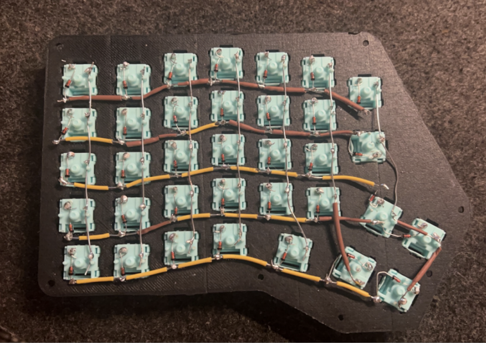

A hand-wired split mechanical keyboard built from scratch using mechanical switches, diodes, and a microcontroller (Arduino Nano). This project is heavily based on the Redox Keyboard. The case was 3D printed, and the keycaps came from an old keyboard. The firmware is developed using QMK. This project was definitely worth it and all of the soldering was suprisingly relaxing.
